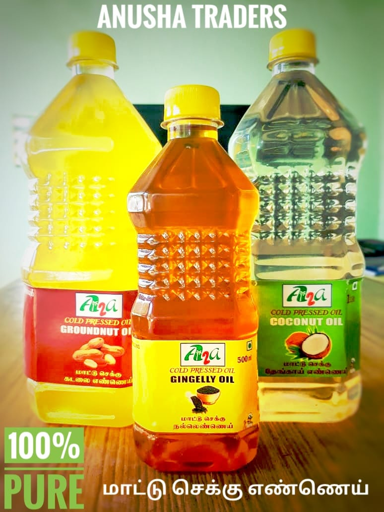

About Us

Nature Way Wood Cold Pressed Groundnut Oil is 100% pure & natural, made from handpicked premium edible groundnuts from South India. Cold-pressed Groundnut oil is cholesterol-free, rich in Vitamin E & a good source of essential fatty acids. It is suitable for deep fry cooking.
Sometimes called virgin coconut oil, unrefined coconut oil is oil that has been pressed from coconut meat and undergone no further processing.
Sometimes called virgin coconut oil, unrefined coconut oil is oil that has been pressed from coconut meat and undergone no further processing.
- All types oils are available
- 0 % fact , 100% Orgainc preparation
- Free from agrosant oil